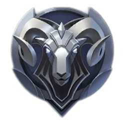

Элита (Elite): Следующий шаг с 3 дивизионами (III, II, I) и 4 звёздами на каждом. Пора учиться фармить и помогать союзникам.
На начальных стадиях рейтинговой игры вашими противниками в основном будут боты, так как игроки только знакомятся с системой рангов. Поэтому до грандмастера необходимо выполнять следующее: